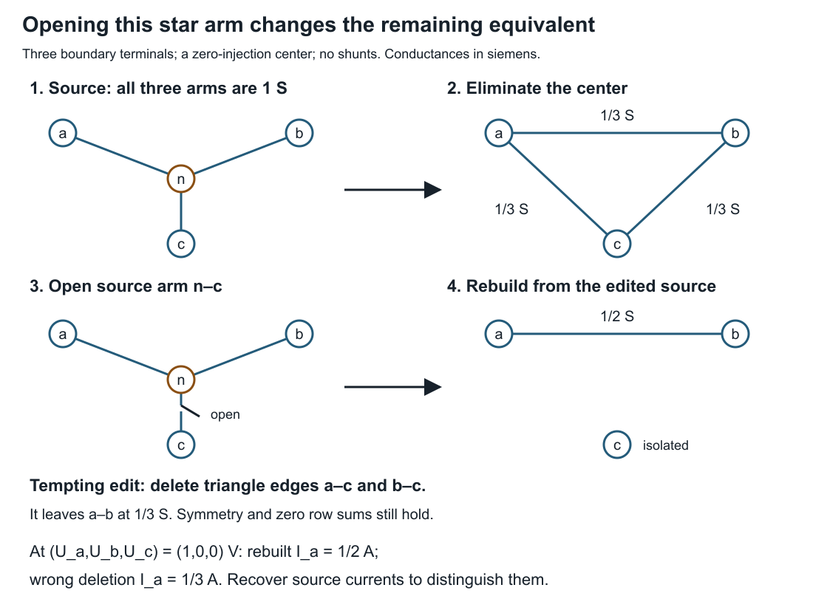
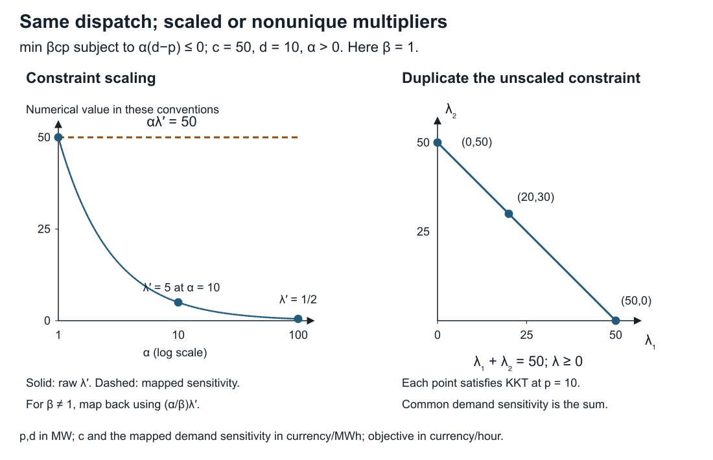

Building and changing a model you can check
Page status: three exact executable teaching witnesses with deliberate failures and transfer exercises; not a production importer, incremental network compiler, or OPF price validator.
A colleague sends a network file, asks for one outage, and wants the marginal cost of serving more demand. Each request looks routine. Each crosses a boundary where software can change the mathematical problem without producing an error. This chapter works through those boundaries using three small models, so every expected result can be derived before running code.
The assembly lesson supplies the method for constructing and checking equations. Here the task is to keep their meaning intact during import, modification, and interpretation. Run all three examples from the repository root; they require only standard-library Python and write no files:
python3 experiments/lessons/practical_model_checks.py
python3 experiments/lessons/practical_model_checks.py --checkImport meaning, not just numbers
Suppose a source record contains a branch rating of zero. Predict the result of testing a 10 MVA transfer: should it pass, fail, or remain undecided?
There is no answer until the field convention is known. In MATPOWER's version-2 case format, RATE_A=0 specifies an unlimited rating. TAP=0 indicates a line, whose ratio is mathematically unity, rather than a transformer of zero ratio. These are documented encodings, not defects [27].
The lesson's small internal rating type separates four states:
| Internal state | Meaning in this example | Result at 10 MVA |
|---|---|---|
| finite, 0 MVA | impose a zero magnitude bound | failed |
| unbounded | impose no bound from this rating field | passed |
| unknown | no rating value or explicit unbounded declaration available | indeterminate |
| not applicable | this particular rating check does not apply | not applicable |
These are outcomes of one rating check, not a feasibility verdict on the network. The source format still requires its fields; representing an absent field as unknown is a way to retain incomplete input for diagnosis, not to declare it a valid MATPOWER case.
The faulty adapter copies RATE_A=0 into an internal finite zero bound. It accepts the file, retains the number and units, and rejects the transfer. The correct field adapter decodes the sentinel and passes this particular check. Neither result depends on solving power flow.
A numerical round trip does not expose the faulty adapter: a mistaken reader and writer can reproduce the same zero while imposing the wrong constraint in between. Test the decoded behavior against the source convention. Claim PRACTICE-IMPORT-001 records this narrow counterexample.
The reverse conversion also has limits. A true finite zero bound cannot be written as RATE_A=0 without changing its meaning. The lesson refuses to encode that state, an unknown rating, or a not-applicable state into this single field. A production exporter needs an explicitly supported alternative representation or a clear refusal. It must not silently replace them with unlimited capacity.
For TAP, preserve both the effective ratio and the source kind: a line encoded by zero and a unity-ratio transformer encoded by one can share a ratio without having identical equipment semantics. Other transformer fields and conventions are outside this field-level exercise.
Change the input. Set RATE_A=10, then test transfers of 10 and 11 MVA. Remove the rating field rather than setting it to zero. Explain the three results before executing the checks. The finite rating passes at its bound, fails above it, and the missing field remains unknown. No inference has supplied an equipment rating.
Rebuild after an edit before attempting reuse
Consider three resistive arms connecting boundary terminals $a,b,c$ to an internal node $n$. All three conductances are 1 S. There is no current injection or shunt at $n$. Currents are positive from each boundary terminal toward the center.
For nonnegative arm conductances $g_a,g_b,g_c$ with positive sum $s$, KCL gives
\[U_n=\frac{g_aU_a+g_bU_b+g_cU_c}{s},\qquad I_k=g_k(U_k-U_n),\qquad s=g_a+g_b+g_c.\]
Eliminating the center therefore gives the exact boundary operator
\[\mathbf K=\operatorname{diag}(g_a,g_b,g_c) -\frac{1}{s}\mathbf g\mathbf g^{\mathsf T},\qquad \mathbf g=(g_a,g_b,g_c)^{\mathsf T}.\]
For the three equal arms this is a triangle of conductance $1/3$ S on each edge. Predict the new boundary operator when the source arm $n-c$ is opened.
Opening that arm sets $g_c=0$. It leaves a series path from $a$ to $b$ with conductance $1/2$ S, and an isolated terminal $c$:
\[\mathbf K_{\mathrm{open}}= \begin{bmatrix} 1/2&-1/2&0\\ -1/2&1/2&0\\ 0&0&0 \end{bmatrix}\ \mathrm S.\]

A tempting update deletes the two triangle edges incident to $c$. That leaves conductance $1/3$ S between $a$ and $b$. The updated graph has the expected isolated terminal, a symmetric operator, and zero row sums, yet it is wrong. At boundary voltages $(1,0,0)$ V, the correct injection at $a$ is $1/2$ A; the faulty update gives $1/3$ A. Both boundary-current vectors sum to zero, so an aggregate current-balance check cannot discriminate them.
Recover $U_n=1/2$ V from the edited source, then evaluate the original arm laws to expose the mismatch. Claim PRACTICE-UPDATE-001 concerns this specific failed update. It does not assert that reductions can never be updated incrementally: an update using sufficient source information can be correct.
The code keeps the source conductances with each compiled operator. Using the old operator with changed conductances raises a stale-reduction error. Rebuilding from the changed source restores agreement. The deliberately faulty update even attaches the new source identity to the wrong matrix: correct metadata alone does not establish that the equations were updated correctly.
For each tested source, the checker compares the matrix with a separate arm-law evaluation on all three boundary basis vectors. Because both maps are linear, equality on that basis establishes equality throughout their boundary-voltage space in exact arithmetic. This conclusion relies on the declared resistive model, linearity and recovered center equation; it does not authenticate the conductance data or establish a general nonlinear update method.
Change the input. After opening $n-c$, change $g_b$ to 2 S. Derive the remaining series conductance before rebuilding. It is $2/3$ S. Then open all three arms. The displayed inverse formula is inapplicable because $s=0$; the center voltage is undetermined, although the boundary current map can still be represented as zero. The lesson rejects that input rather than dividing by zero or claiming that the circuit cannot be represented at all.
Recover the meaning of a multiplier
Use a separate scalar dispatch model to isolate the interpretation issue. Let $p$ be supplied power in MW, $d>0$ a demand requirement, and $c>0$ a constant cost in currency/MWh. There is no upper capacity limit in this example:
\[\min_{p\in\mathbb R} cp\quad\text{subject to}\quad d-p\le0.\]
The unique optimum is $p^*=d$ and the cost rate is $cd$ in currency/hour. Using the displayed inequality convention, the Lagrangian is $cp+\lambda(d-p)$. Stationarity gives $\lambda=c$.
Now multiply the constraint by $\alpha>0$ and the objective by $\beta>0$. These are explicit positive numerical scaling factors:
\[L'=\beta cp+\lambda'\alpha(d-p),\qquad \lambda'=\frac{\beta c}{\alpha}.\]
Dispatch is unchanged, but the raw multiplier is not. The derivative of the unscaled physical cost rate $C(d)=cd$ with respect to physical demand is
\[C'(d)=c=\frac{\alpha}{\beta}\lambda'.\]
For $c=50$ currency/MWh and $d=10$ MW, changing $\alpha$ from 1 to 100 while retaining $\beta=1$ changes the raw multiplier from 50 to $1/2$. Both cases supply 10 MW at 500 currency/hour; both have marginal physical cost 50 currency/MWh. Reporting the raw $1/2$ as that price would be an interpretation error.
This is a direct perturbation calculation, consistent with the duality and sensitivity treatment in [28]. It fixes the inequality sign and objective convention explicitly; a solver interface using another convention requires its own mapping. It is not an AC-OPF locational-price certificate. Claim PRACTICE-DUAL-001 records the scalar scaling and nonuniqueness example.
Duplicate the original unscaled constraint. Stationarity now requires $\lambda_1+\lambda_2=c$ with both multipliers nonnegative. The allocations $(50,0)$, $(0,50)$ and $(20,30)$ all satisfy the KKT conditions at the same optimum. Individual constraint multipliers are not unique. If demand changes in both copies together, its cost sensitivity is their sum. Changing only one copy is a different perturbation question.

The left panel plots the analytical multiplier against $\alpha$ on a logarithmic horizontal axis with $\beta=1$. The right panel concerns the duplicated, unscaled model. Its entire segment satisfies KKT at $p=d$; the three marked points are examples, not three unique solver outputs.
Change the scaling. Set $\alpha=100$ and $\beta=1/1000$. The raw multiplier becomes $1/2000$; mapping back still gives 50 currency/MWh. Check this by increasing demand by $1/10$ MW: the physical cost rate increases by 5 currency/hour. A negative constraint scale would reverse the inequality unless the formulation were changed; it is outside the stated rule.
Organize the implementation around these checks
Keep source records separate from generated equations and results. A source record identifies the equipment and its declared state. A compiled object identifies the assumptions and source values used to construct it. A result identifies the compiled object that was actually solved. A change to one does not automatically update the others.
Start with a rebuild path whose output can be checked. Add reuse only after specifying which changes preserve the cached object and which invalidate it. For a larger network, an invalidation key may need terminal ordering, topology, device parameters, operating point, formulation options and implementation version. The three conductances are sufficient only for this fixed star API.
This is the question of from-scratch consistency in incremental computation: does reusing work after an input change agree with recomputing the specified computation [29]? For numerical solvers, compare mapped observations and declared tolerances rather than demanding identical iterates.
Likewise, translating a source network into equations resembles a compiler pass. Translation validation checks a particular source/target pair, with its own checker and soundness obligations [30]. The book's finite witnesses use that idea; they are not formally verified compilers. Sharing a primitive formula or mistaken input between builder and checker can leave a common error undetected.
Use the following sequence when a colleague reports a disagreement:
- Identify the question. Is the disagreement about a field, equation, feasible state, recovered observation, objective, or sensitivity?
- Keep the source. Record the exact input and edit; do not repair the only copy of the failing case in place.
- Rebuild and recover. Compare fresh and reused computations, then evaluate the original quantities needed by the study.
- Change a diagnostic input. Use an independent boundary excitation, a limit-crossing value, or a specified perturbation. A test that both wrong and right models pass does not resolve their disagreement.
- Minimize the failure. Remove unnecessary equipment while retaining the assumptions and failure criterion; keep that case as a regression test.
Submit a small, reviewable correction
For one example, submit the original input, the proposed edit, your predicted result, the faulty result, and the check that distinguishes them. State a plausible test that would not detect the problem. Finally, state what your correction does not establish.
A satisfactory import correction distinguishes the explicit sentinel from missing data and refuses an unrepresentable export. A satisfactory update correction recovers the edited source currents, including the asymmetric transfer case. A satisfactory dual correction names the perturbation, scaling and sign convention and handles the duplicated constraints without inventing unique individual prices. These are separate scientific obligations even when all three implementations return numbers successfully.